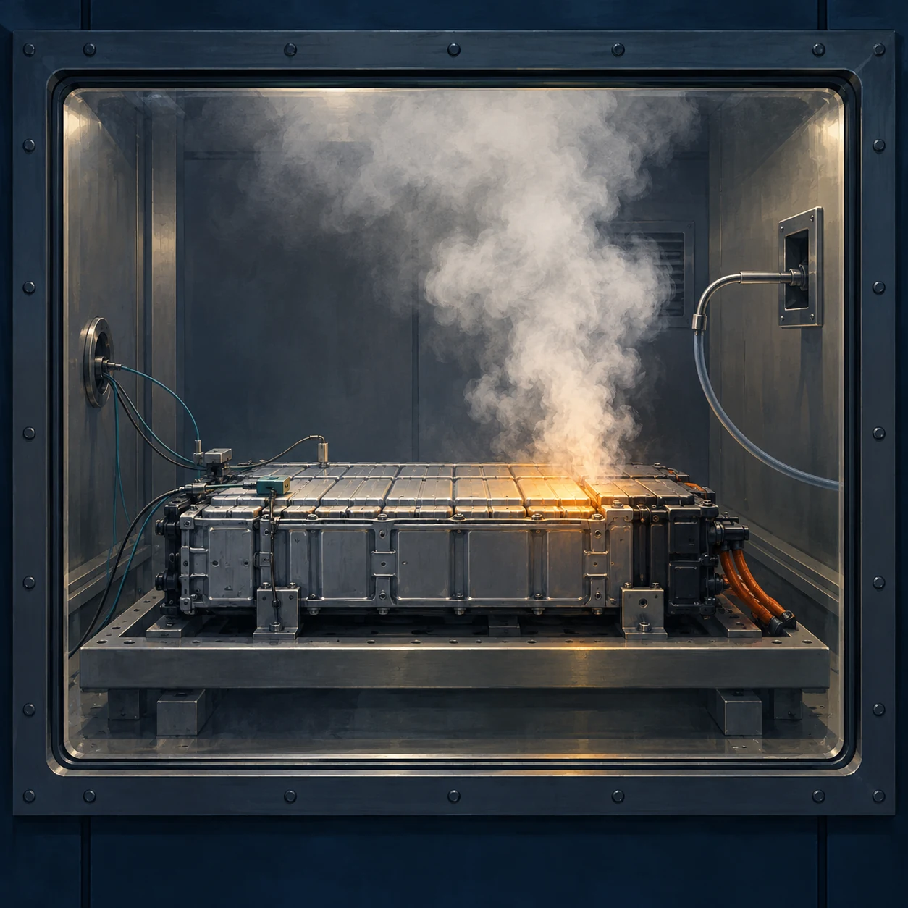

研究解説 産総研の研究紹介と東京消防庁の実験報告書をもとに、確認された結果と、その読み取りを整理します。
リチウムイオン電池火災は、炎だけでは語れない
読む目安：約5分
ガス・粉塵・温度変化から熱暴走を読み解く
炎が見えない。そのとき、電池の周りでは何が起きているのだろうか。
産業技術総合研究所（産総研）が2026年7月に紹介した実験では、電気自動車用リチウムイオン電池から、目視で火炎を捉えられない状況でも可燃性や毒性を持つガスが出て、残る可能性が示された。火炎の観察に、ガス・粉塵・温度の計測を重ねると、見えてくるものがある。[1]

クリック・タップで拡大（キーボードではEnter）
熱暴走と、目に見える火炎
リチウムイオン電池では、内部短絡などをきっかけに化学反応が進み、急激な異常発熱が起きることがある。こうした熱暴走は、発火につながり得る。[3] ただ、外から炎が見えるかどうかと、電池内部や周囲にどのような危険があるかは、分けて考える必要がある。
例えば、「火炎は確認できない」は観察した事実である。そこから「可燃性ガスもない」「周囲の空気も安全だ」と進むには、それぞれを裏付ける情報が要る。本稿で注目したいのは、この観察と判断の間にある部分だ。
どんな実験だったのか
元の報告書は、東京消防庁が公表した『電気自動車に関する実証実験結果報告書―蓄電池の燃焼・消火試験―』である。加熱試験の対象は、電気自動車向けのNMC系（三元系）とLFP系（リン酸鉄リチウム系）の電池セルを各1種類。車両全体を燃やした試験ではない。加熱時の温度や電圧に加え、周囲のガスと粉塵を計測した。[2：付録2–8]
今回のLFP系セルでは、加熱に伴ってガスが噴き出しても、自発的な発火は確認されなかった。一方、その噴出ガスに別途加熱して着火させると燃え、粉塵は着火しない試験でも確認された。[2：付録60] この結果は、発炎の有無だけでは試験中の現象を捉えきれないことを、具体的に示している。
温度・ガス・粉塵を読み合わせる
温度――数値と一緒に、測った場所を見る
温度の記録を読むときには、どこで、いつ測った値なのかを確かめたい。セル表面、周囲の空間、覆っているものの表面では、同じ「温度」でも対象が違う。実験結果を比べる際も、測定点を省いて最高温度だけを並べると、状態の違いを見失いやすい。これは本稿が資料を読むうえで重視する点である。
ガス――何を、どこで、いつ測れたのか
報告書は、周囲のガスの成分・濃度を概括的に評価する試験であり、電池から出たガス全量の厳密な分析ではないと説明している。採取したガスが管を通って装置へ届くまでの遅れも記されている。[2：付録6–7]
したがって、温度の変化とガスの検出がグラフ上で近くても、その順序や時間差を読むには、採取位置や測定の応答時間を考慮したい。「リアルタイム」という言葉も、何がどの条件で記録されたかと一緒に受け取る必要がある。
粉塵――煙の見た目で、成分や危険性を決めない
粉塵の計測は、ガスとは別に、放出された粒子の存在や変化を捉える手掛かりになる。煙が薄い・濃いという映像の印象と、粒子の濃度や成分を測ることは、異なる情報だ。なお、粉塵が確認されたという結果から、そのまま粉塵爆発が起きると結論することもできない。本稿では、測定された現象と、そこから判断できる範囲を区別して読む。
炎が収まった後にも、別の情報がいる
報告書には、防火ブランケットで覆う消火試験も含まれる。その条件下では、火炎を抑えても電池の反応を止めきれず、覆った内側に有毒なガスが残る結果が報告されている。[2：付録55–60]
ここからの読み取りは、火炎、温度、ガスを、それぞれの対象として確かめることだ。「炎が収まった」と「内部の反応が止まった」、さらに「周囲の空気が安全になった」を、一つの確認で済ませることはできない。この試験を、あらゆる消火方法で同じ経過をたどるという意味に広げるべきでもない。
実験の範囲と、現場への読み替え
今回の知見は、選ばれた電池セルと、定められた加熱・計測条件に基づく。電池の材料や構造、充電状態、劣化状態が違う場合まで、同じ結果を保証するものではない。産総研も、こうした条件の違いを踏まえたデータの蓄積と、消火後の確認方法の検討を今後の課題としている。[1]
このため、本稿から「何分待てばよい」「何℃なら近づける」という一律の基準は導けない。実際の消防活動への適用には、車両・電池の仕様や現場条件、所属本部の活動基準などを踏まえた検討が必要になる。
研究を訓練や振り返りに生かすなら、「何を見たか」「何を測ったか」「まだ分からないことは何か」を分けて記録するところから始められる。炎の映像に、温度、ガス、粉塵という観察の軸を重ねる。リチウムイオン電池火災を理解するには、その時間の流れまで見ていきたい。
参考資料
- 産業技術総合研究所 安全科学研究部門（2026年7月10日）．リチウムイオン電池発火時に発生するガスおよび粉塵の評価．
- 東京消防庁（2026年3月）．電気自動車に関する実証実験結果報告書―蓄電池の燃焼・消火試験―（付録・PDF、約6MB）．協力：産業技術総合研究所．調査研究結果の掲載ページ．
- 製品評価技術基盤機構（NITE）（2025年5月27日）．製品安全情報マガジン Vol.477「外出中のスマートフォン、モバイルバッテリー、携帯用扇風機による事故」．発火のメカニズムの説明を参照．